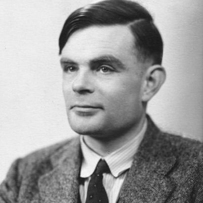
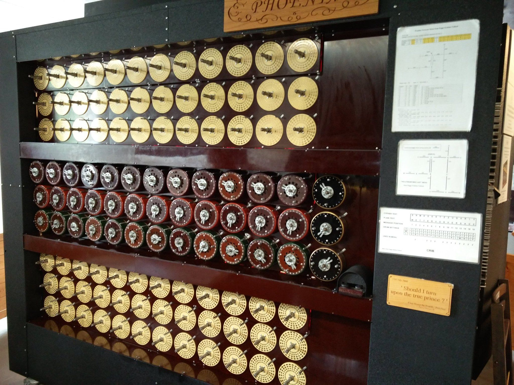

Matemático, lógico, y precursor de la informática.
Alan Mathison Turing (23 de junio de 1912 - 7 de junio de 1954) fue un matemático, lógico y criptógrafo británico. Nació en Maida Vale, Londres, y desde una edad temprana demostró una aptitud excepcional para las matemáticas y la ciencia.
Turing estudió matemáticas en el King's College de la Universidad de Cambridge y luego trabajó en problemas fundamentales en lógica matemática, teoría de números y computabilidad.
Durante la Segunda Guerra Mundial, Turing desempeñó un papel crucial en la descodificación de los códigos de la máquina Enigma utilizados por la Alemania nazi, lo que contribuyó significativamente a la victoria de los Aliados.
Desafortunadamente, Turing enfrentó persecución debido a su orientación sexual en esa época y fue condenado por su homosexualidad en 1952. Murió en 1954 a la edad de 41 años.
Entre sus logros más destacados se encuentra la creación de la "máquina de Turing", un dispositivo teórico que se considera un precursor de la computadora moderna. Esta máquina ayudó a formalizar el concepto de algoritmo y la computación automática.
Turing también desarrolló la prueba de Turing, un concepto fundamental en inteligencia artificial que evalúa la capacidad de una máquina para mostrar un comportamiento inteligente indistinguible del de un ser humano.
Además de su trabajo en criptografía y computación, Turing contribuyó a la biología matemática, explorando la teoría de la morfogénesis.
Su legado perdura en la actualidad, y en 2009, el entonces Primer Ministro del Reino Unido, Gordon Brown, emitió una disculpa oficial en nombre del gobierno británico por el tratamiento injusto que recibió debido a su orientación sexual.
Turing no solo se destacó en la decodificación de códigos, sino que también contribuyó a la construcción de máquinas para automatizar el proceso de cálculo complejo. Su trabajo sentó las bases para el desarrollo de las primeras computadoras.
Además, Turing diseñó el ACE (Automatic Computing Engine), uno de los primeros diseños detallados de una computadora electrónica de propósito general.
Sus contribuciones a la computación y la inteligencia artificial siguen siendo fundamentales en la era digital actual.